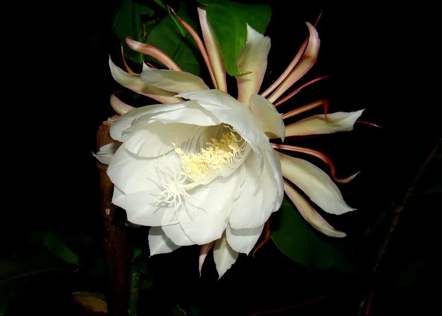

多肉植物 · 植物界
昙花 Epiphyllum oxypetalum

仙人掌科附生多肉，花朵硕大洁白，只在夏秋夜间开放数小时，成语“昙花一现”正源于此，是著名的夜间观赏植物。
- 分类
- 门被子植物门纲木兰纲目石竹目科仙人掌科属昙花属
- 栖息环境
- 墨西哥及中美洲热带雨林的树干、岩石上，喜温暖湿润、半阴
- 地理分布
- 原产墨西哥及中美洲，中国南方及世界各地盆栽观赏
- 保护级别
- 暂无评估
物种志
昙花为仙人掌科昙花属附生肉质灌木，茎多分枝，老茎圆柱形，新枝扁平、叶状，边缘具波状浅齿，长可达 1 米。花单生于叶状枝边缘，漏斗状，长 25–30 厘米，直径约 20 厘米，花被片多数、白色，外层带淡紫红，夜间开放，花期 6–10 月，单花仅开约 4–5 小时。
昙花原产墨西哥及中美洲的热带雨林，附生于树干或岩石上，喜温暖湿润、半阴和通风良好的环境，忌强光暴晒和积水。它在夜间开放，是为了配合当地夜间活动的蛾类和蝙蝠传粉；花开放时香气浓郁，天亮前即凋谢，因此有“昙花一现”之说。园艺中可用叶状枝扦插繁殖，夏季适当遮阴、保持空气湿度，能让花开得更整齐。
形态与习性
- 株高盆栽高 1–2 米，枝条可匍匐或垂挂
- 花期6–10 月，单朵花夜间开放约 4–5 小时
- 果期花后结红色浆果
- 光照喜半阴，忌强光直射
- 水分喜湿润，空气湿度宜 60% 以上
- 土壤疏松透气、排水良好的腐殖质土
- 繁殖以叶状枝扦插为主
趣味知识
- “昙花一现”原指昙花开放时间极短，单朵花通常只开 4–5 小时。
- 昙花在夜间开放，与蛾类、蝙蝠等夜行传粉者的活动时间相吻合。
- 它的白色大花直径可达 20 厘米，开放时香气浓郁，天亮前凋谢。
- 昙花是附生植物，野生状态下附生在树干和岩石上，根部并不深扎土壤。